深植え過密フリージアが開花しました。
2025/04/20
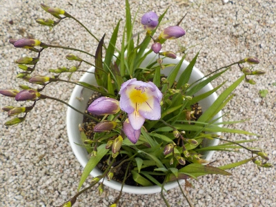
深植えなので花の支えはいらないです。過密なのでこれから咲く花の数が多いです。
過密なので球根が大きくならないかもしれませんが、球根が増えても捨てることになるのでこれでいいんじゃないかな。
2025/04/20

深植えなので花の支えはいらないです。過密なのでこれから咲く花の数が多いです。
過密なので球根が大きくならないかもしれませんが、球根が増えても捨てることになるのでこれでいいんじゃないかな。
2024/12/22
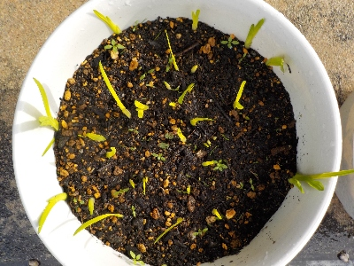
球根を植えてから1月くらいなので、まだ小さいです。
軒下で育てているので、寒くても春までに大きく育つんじゃないかと期待しています。
2024/11/17
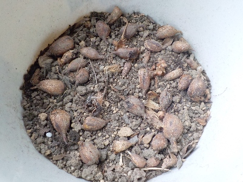
球根が沢山出来ましたが、鉢の数を増やしたくないので密で植えることにしました。
密だと風通りが悪くて病気になったりするのかな？病気にならないで、葉っぱや花が生い茂った状態が見たいです。
2024/04/07
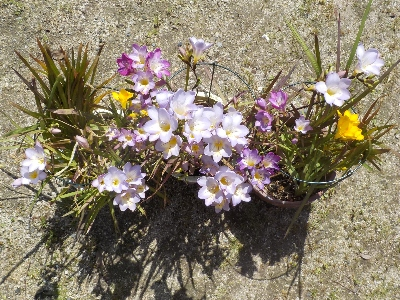
いろんな色がミックスして派手に咲いています。
たぶん土が痩せちゃってると思うので、今年は放ったらかしにしないで球根を掘ろうと思ってます。
2023/11/12
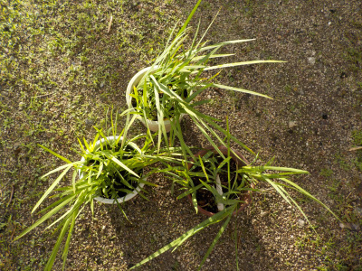
初夏に球根を掘り起こした方が良かったんでしょうけど、フリージアの鉢植えはもうやめようと思い放置していました。
すくすく育っているので、このまま育てようかなと思っています。
2023/04/09
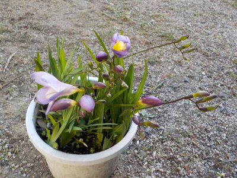
育成期間が短いので小さいです。当然といえば当然。
小さくて可愛いですが、もうちょっと大きくてスラっとした方が見栄えがいいですね。
次はもっと早く植えようと思います。
2023/04/01
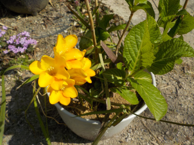
今年も黄色いフリージアから開花がスタートです。
去年より1週間早いです。
2022/12/04
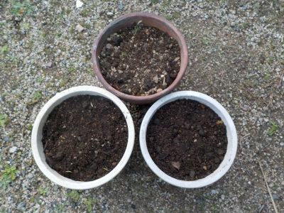
植えようとはずいぶん前から思っていましたが、先延ばししていたら12月になってしまいました。
今回は3鉢です。
たぶん今までで一番遅く植えてます。たぶんちゃんと育つでしょう。
2022/07/03
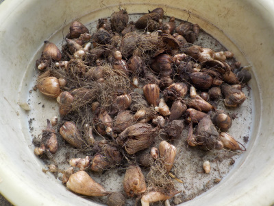
わりと順調に育って花も沢山開花したので、球根もそれなりに増えてると思っていたんですが、増えなかったです。
肥料化足りなかったかな。
でもこれだけあれば十分です。球根増えても困るので、次回も同じ様に育てようと思います。
2022/05/05
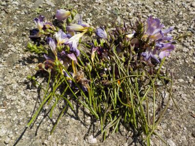
これで球根が大きくなりますね。
でも球根そんなにいらないかな。
2022/04/23
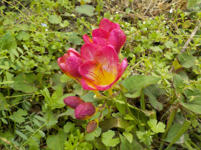
我が家のフリージアは青が一番多く、赤が一番少ないです。
赤を増やしたいですが、赤だけ特別扱いして育てるのは嫌だな。
2022/04/16
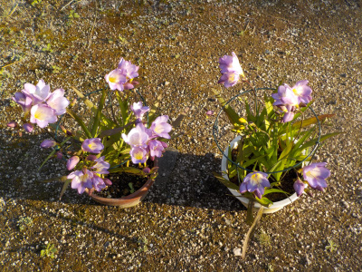
青空の下に置いてて寒かったせいか、そんなに葉っぱも茎も長くないです。
輪がなくてもほとんどが自立出来そうですが、全部が中心に寄っているので見栄えがいいです。
支柱が役に立って良かった。
2022/04/10
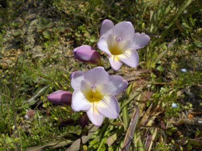
上品な色合いですね。でも今の気分だと黄色の方が好きだ。
温暖化で地植えのフリージアは今後勝手にドンドン増えていくんだろうな。
水仙も増えてるな。こうゆうのってそのうち邪魔になるのかな。
2022/04/09
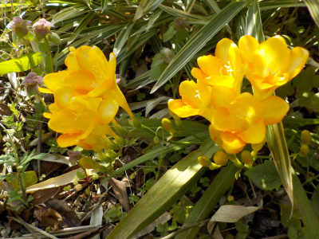
地面は暖かいんですね。鉢植えよりも早く咲きました。
球根を採ったり植えたりとか、水やりして手間暇かけたものより、何もしないて勝手に育ってる地植えの方が成長がいいってなんかつまらないですね。
2022/03/21
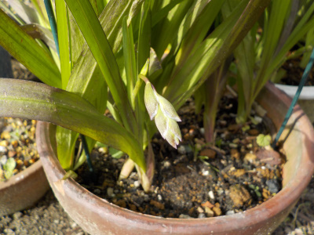
まだツボミは小さいですが、暖かくなってきたのですぐ大きくなるんでしょうね。
今年はよく育っているので、球根が倍増しそうな感じがします。
2022/01/31
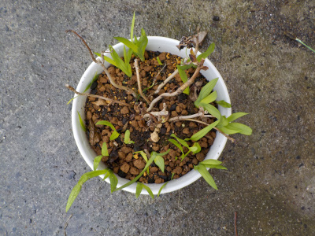
アジサイ鉢の植替えの時に、フリージアを寄せ植えしたものです。
これくらい芽が出てたら、春には賑やかになりそうです。
2021/10/31
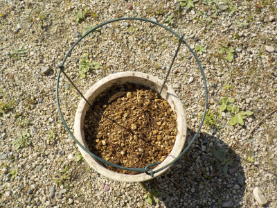
フリージアの球根を植えました。
カーネーション用に買った円形支柱がフリージアに使えるんじゃないかと思い、鉢に装備しました。
たぶんこれで葉っぱが倒れるのを防げそうです。今年はドンドン水やって、大きく育てようと思います。
2021/09/26
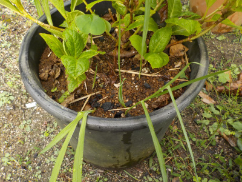
去年アジサイの植替えした時に一緒に植えたフリージアが今頃発芽しました。
自然な状態だと今頃発芽するんですね。
フリージアの球根を植える準備をそろそろした方が良さそうです。
2021/06/26
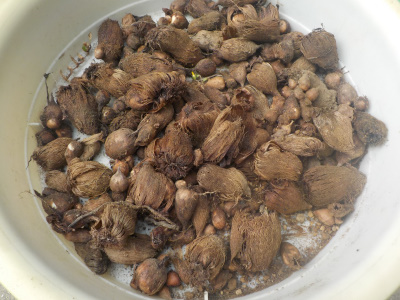
去年と比較したら半分くらいの量かな。
今年はほとんど芽が出なかったので球根がダメになったんじゃないかと心配していたんですが、残っていて良かったです。
次回は適切な時期になったら植えて、大きく育てようと思います。
2021/04/10
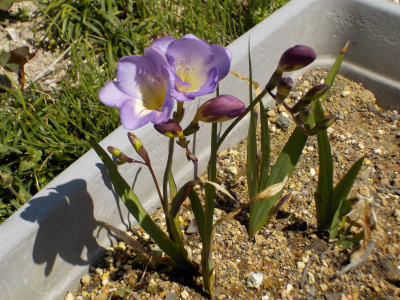
フリージアを小さく育てようと思い、植えるのを遅くしたり水やりをしなかったです。
希望通り小さな株で花が咲いたんですが、成長した数が少ない。 プランターがスカスカです。
これから芽が出て花が咲けばいいですが、今から芽が出るなんてことはきっとないですよね。
芽が出なかった球根はダメになっているのかな？
2020/11/15
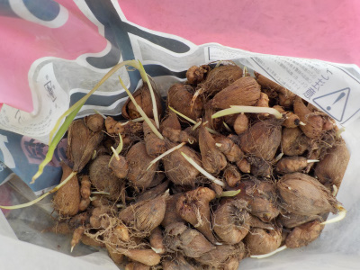
11月半ばなので、もう植え終わっている時期ですが何もしていませんでした。
今日半分くらい植えましたが、芽が出ていると向きとか深さ考えなくていいので楽ですね。
ちょっと深めに植えたので、成長しても倒れにくいかも。
大きく育てるよりも、小さく育てた方が可愛くて綺麗だと思う。